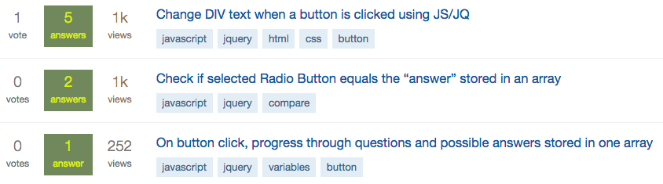
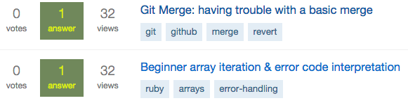

- student: DBC
- mkt mgr + product liaison: TRLA
- timcannady@gmail.com
- twitter.com/tcannadysf
- linked.com/in/timcannady
- github.com/timcannady
Culture
Asking Good Questions
Being able to ask good questions is a skill. We're taught "there's no such thing as a bad question," which is true. But is doesn't mean we shouldn't try to get better!
I think the benefits are three-fold:
- For the asker: good questions have the potential to deliver a better answer, and sooner
- For the answerer: good questions make it easier for the answerer to deliver an accurate answer, and sooner
- For the community: good questions raise the bar for the content being discussed within the community, whether online or in person
I read some good articles and then looked back at my old questions on StackOverflow. Here are some metrics:
- Overall: 47 Reputation, 8 Badges, 13 questions, ~3400 views, one star, +3 overall votes, 31 total answers received, avg ~2.4 answers per post
- Highest voted: +3 votes
- Lowest voted: -1 votes
- Most viewed: 1,026 views
- Least viewed: 31 views
I'm not positive what caused the delta in votes between the highest and lowest. It looks like the content of highest was more cryptic, but perhaps that's a good thing. The lowest was verbose, which judging by my other posts isn't a reason to be downvoted. I don't think I could have removed much. Perhaps receiving just one downvote isn't enough of a sample size. I think I'll turn it around and reflect on the fact that my extra-simple post received three upvotes. Good to know! Keep it simple when possible.
What's interesting is the views trend downwards when sorted chronologically. My first reaction is this is a bad thing. But I really don't know. Is it because they're less interesting? Are the titles getting worse? Or is it instead that the questions are getting better and thus answered quicker. It could also be that the earlier questions were more beginner in nature and perhaps more popular among the hordes of people dabbling in HTML? Whereas my later questions are more specific and niche? I'm not sure!
clear titles: increased views 
Unqualifiables-aside, the question with the most views has a clear, specific and conversational title: "Change DIV text when a button is clicked using JS/JQ". It has the follow-up at the top of the post, uses clean formatting, includes code, separates HTML from CSS and JS, and it includes a link to JSFiddle.
On the contrary, my least-viewed question has a less-conversational title and places the topic at the start: "Git Merge: having trouble with a basic merge". The article I read (and linked earlier in this post) recommends against doing this. The title is also lacks specificity. Next, the body of the question beats around the bush. Instead of immediately spelling out the problem, it sets the stage for what was happening prior. I'm a global learner and sometimes I assume my audience is as well. In the future it's probably best to list the problem out the gates and only then define the environment.
unclear titles: decreased views 
These reflections only regard online communities, being just one of the formats where questions take place That said, I think it's a good place to begin.
We're able to take our time when posting online. We can gather thoughts and examples, we can proof-read and edit. And we should try to get things correct from the start seeing it takes longer to communicate. Asking questions in person is different in many ways. Communication is typically done through voice instead of images and text, we risk interrupting or being interrupted, and some of us might mumble (a personal struggle...). That said, the rules of thumb from posting online still apply and are good practices to master no matter the format:
- how to quickly garner someone's attention
- how to keep them interested
- how to clarify the precise question you're asking, and
- how to clarify the precise answer you're looking for